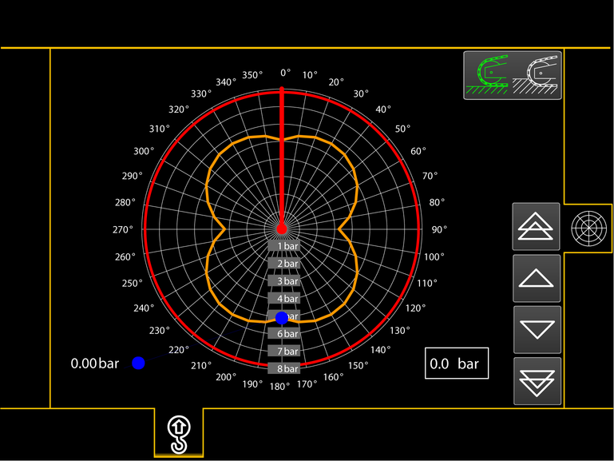
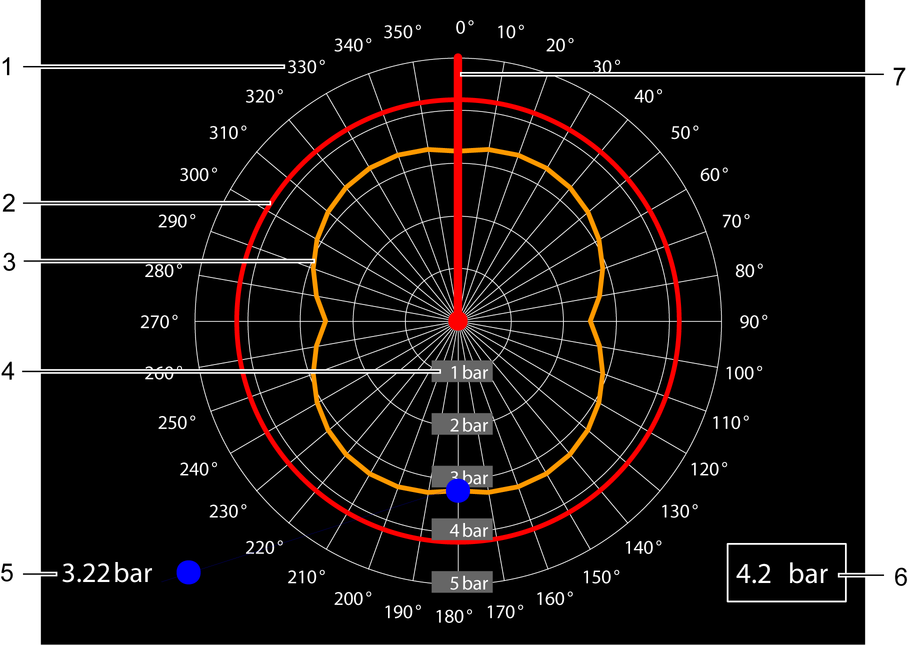

Bildschirmseite Bodendruck-Rosette*
Taste Bildschirmseite Bodendruck-Rosette
Auf Bildschirmseite Bodendruck-Rosette umschalten.

Fig. 2227: Bildschirmseite Bodendruck-Rosette
Fig. 2227: Bildschirmseite Bodendruck-Rosette
Die abgebildeten Werte sind beispielhafte Werte.

Fig. 2228: Bildschirmausschnitt Bodendruck-Rosette
Fig. 2228: Bildschirmausschnitt Bodendruck-Rosette
Drehwinkel des Oberwagens | |
Maximal zulässiger Bodendruck | |
Maximal auftretender Bodendruck bei Drehung des Oberwagens um 360° | |
Bodendruck in bar ( psi) | |
Aktueller Bodendruck | |
Eingabefeld Maximal zulässiger Bodendruck | |
Aktuelle Ausrichtung des Hauptauslegers |
Taste Fester Untergrund (leuchtet grün)
Fester Untergrund ist gewählt.
Weichen Untergrund wählen.
Taste Weicher Untergrund (leuchtet grün)
Weicher Untergrund ist gewählt.
Festen Untergrund wählen.

Taste Wert erhöhen
Maximal zulässigen Bodendruck um 0.1 bar (1.45 psi) erhöhen.

Taste Wert verringern
Maximal zulässigen Bodendruck um 0.1 bar (1.45 psi) verringern.

Taste Wert erhöhen
Maximal zulässigen Bodendruck um 1.0 bar (14.50 psi) erhöhen.

Taste Wert verringern
Maximal zulässigen Bodendruck um 1.0 bar (14.50 psi) verringern.